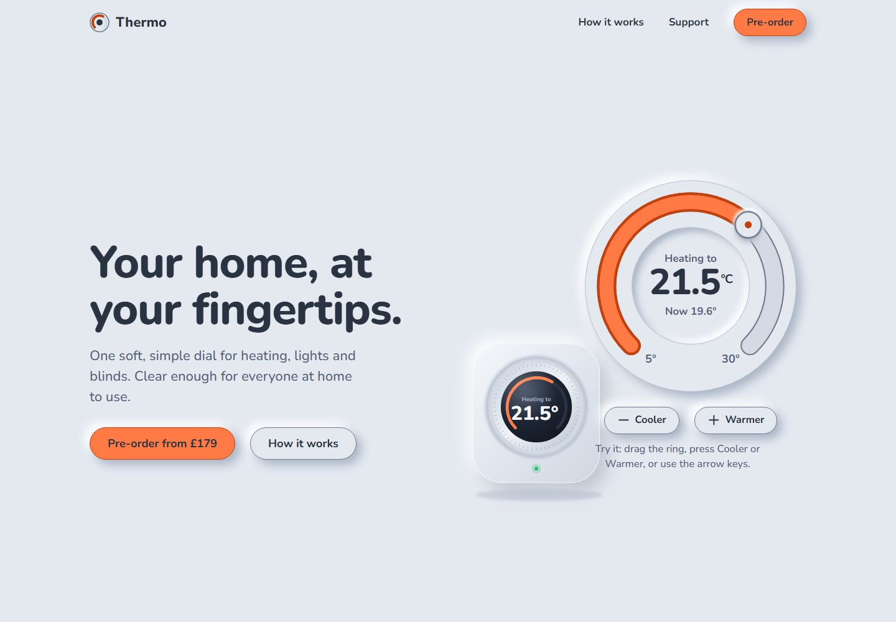

Design exploration / Neumorphism
Thermo
Tactile smart-home controls with accessible dials, room schedules, and real-time device-state sync.

The idea behind the interface.
A fictional smart-home hub with a soft-UI product website and a connected dashboard. The project explores how raised and recessed surfaces can feel tactile without making controls dependent on low-contrast shadows.
Inside the build
- A circular temperature dial supports dragging, buttons, and a complete keyboard interaction model.
- A simulated WebSocket hub synchronizes screens, with optimistic updates, rejected-command rollback, and offline state feedback.
- Room schedules include non-drag controls; high-contrast and wall-tablet modes adapt the same shared component library.
Scope & context
Concept project with a simulated hub, not real Matter-device integration. Real-device kiosk testing and usability studies are not claimed.